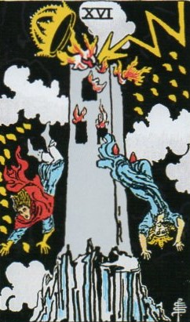
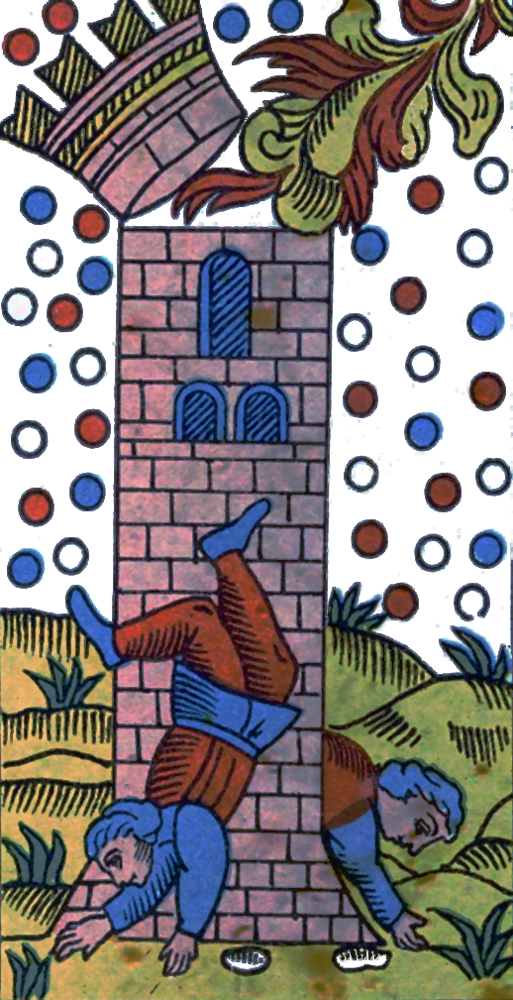
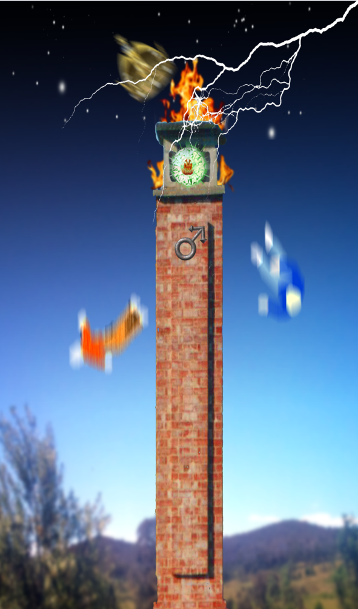
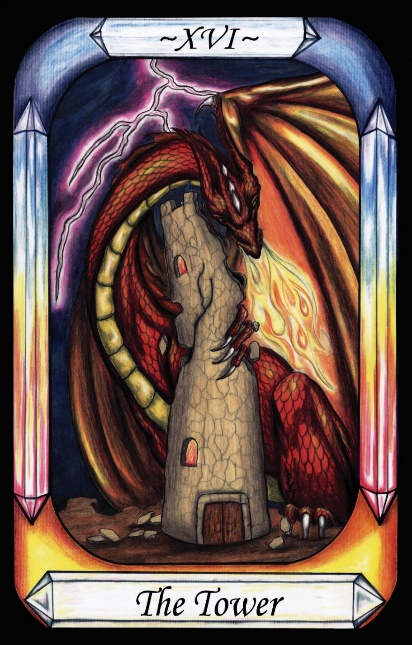
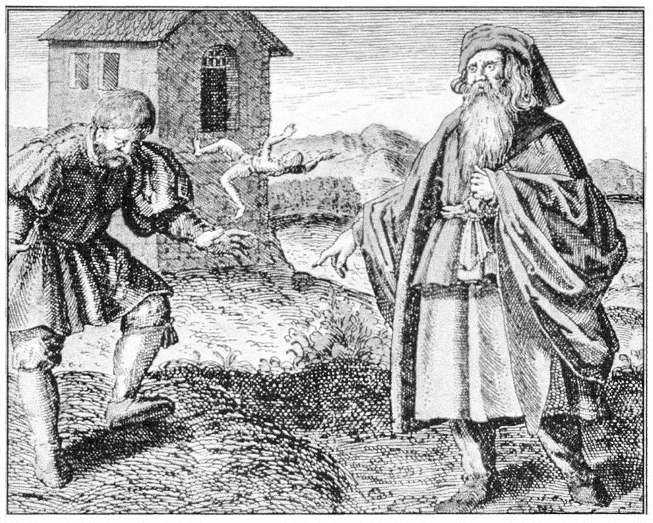
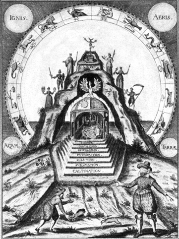
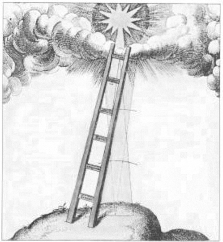

The Tower




Representation |
The Tower of Babel |
Meaning |
The arrogance of men (from Mars) in building a Tower to reach heaven, offends the Gods, and they strike it down with a lightning bolt. |
Opposite card |
|
Function |
The Tower is the Tower of Babel representing Mars, in the form that he is struck down by Jupiter’s lightning-bolt. The Pride that is characteristic of the builders of the Tower is also characteristic of Mars, and his constant desire to become King of the Gods.
[P64] To Mars, he gives up Arrogance, Domination and Ambition.[The Tower of Babel] (Geburah)
RWS Imagery
We see a Tower struck by lightning, with its crown (not roof) dislodged. People jump from the windows and fall towards the Earth. Yods also appear to fall towards the Earth. The card is one of two with a black background, with the other being the Devil card.
Discussion
In the Tower of Babel myth, mankind becomes so proud of his achievements, he decides to build a Tower in order to climb up to the heavens. God blasts the Tower with a lightning bolt, destroying the Tower and knocking man back to the Earth. As a punishment, God splits communication into multiple languages.
The lesson is clear – to remember that we are not Gods, or the equal of God. The lesson is of humility, which is alien to the nature of Mars.
Other Imagery
There are a couple of images from the period that also hint at a hidden alchemical meaning to the card.
Firstly, we see an image with a man falling from a Tower:
In Figure 23 below Morenius, the teacher of Prince Khalid, admonishes a man stuck on the dung-heap of ignorance. The Prime Matter must be liberated from such dross. The falling man in the background shows that the Tower of Alchemy cannot be ascended without the Ladder of the Wise.

Figure 23 - Alchemical Image with person Falling from a Tower
Morienus from Maier Symbola aurea mensae, Franckfurt, 1617.
The reference to the Ladder of the Wise implies that the Alchemists believe that it is possible to climb to heaven once more, without first having to die.
Next, we have an image indicating the nature of the Ladder:
In Figure 24 below, The philosopher ferrets out the prima materia buried deep within the mountain. The Ladder of the Wise leads to the inner temple containing the purified principles. Each step is an alchemical operation. Atop the temple is the phoenix, symbol of the Stone. Standing on the temple are images representing the seven operations, corresponding to the seven Governors.

Figure 24 - Alchemical image of the Ladder of the Wise
Michelspacher Cabala: Spiegel der Kunst und Natur, 1615.
There is a clear message that seven steps are related to the seven Planets whose symbols stand on the outside of the hill. This compares well with the Pymander which also offers seven steps of ascent. There is a message in that the process of the Pymander Ascent may also bring us closer to God.
Another interesting point of symbolism is that the top of the Tower is traditionally a Crown. This is the English translation of Keter – the name of the uppermost Sefiroth of the Qabalistic Tree of Life. This Tree has 10 spheres, of which seven are traditionally related to the planetary Governors. Thus, it seems likely that the Tower card also points to the Tree of Life as a corresponding cosmology, which may also be considered a map of the Ladder of the Wise.
In Figure 25 below, a simpler version of the Ladder indicates its popularity at the time, but without providing the detail offered in Figure 22 - Alchemical image of the Ladder of the Wise.

Figure 25 - The Ladder of the Wise
Engraving from Fludd, Utriusque Cosmi historia Tom II, 1619.